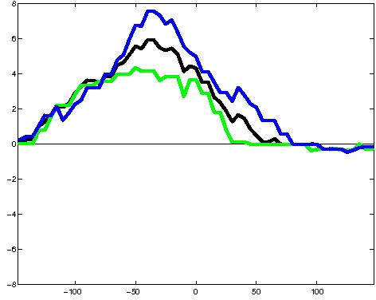
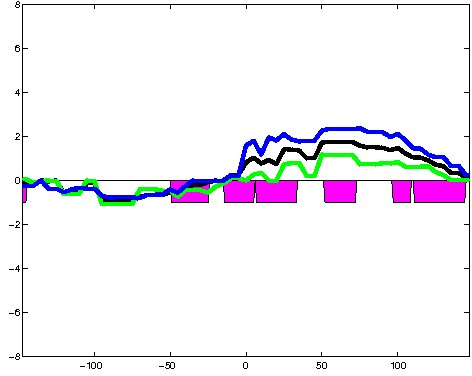

K562 Activating DNase matched - State 11:FaireW (n=3)
K562 Activating DNase matched - State 11:FaireW (n=3)
[
See group descriptions
]


; picked in K562 (state 11:FaireW, DNase); matched; chr17:33,478,089-33,478,383 (295bp)")